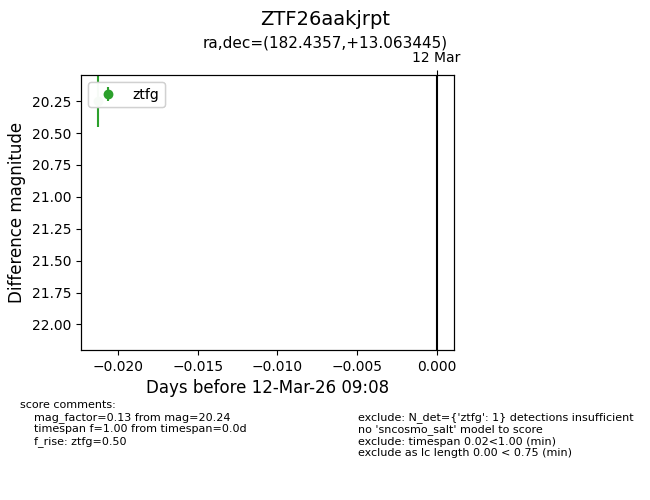
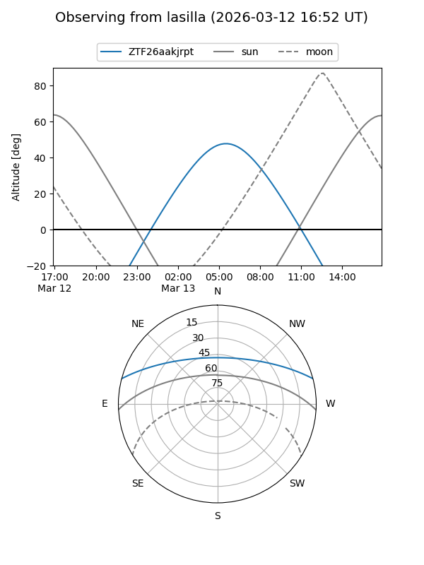
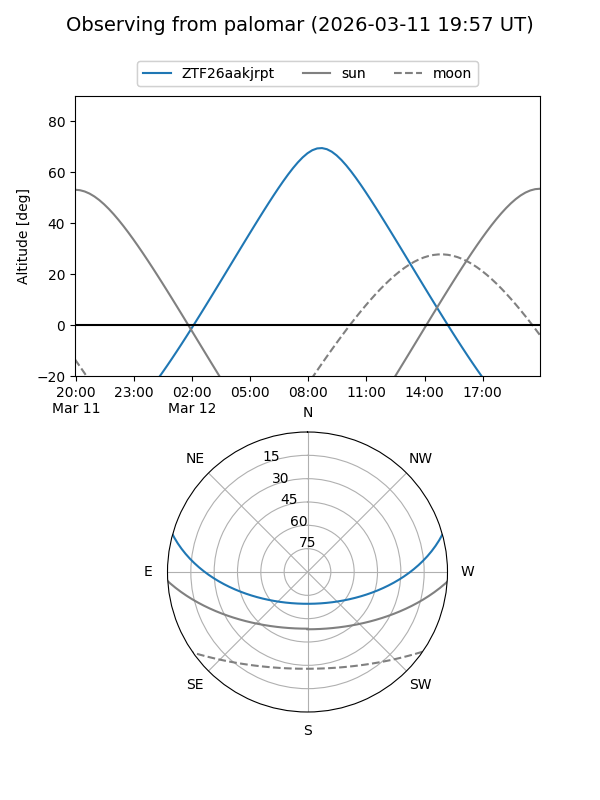

ZTF26aakjrpt
Target ZTF26aakjrpt at 2026-03-12 09:11
Aliases and brokers:
FINK: link
Lasair: link
ALeRCE: link
alt names
ZTF26aakjrpt (ztf,fink_ztf)
Coordinates:
equatorial (ra, dec) = 182.4357,+13.06345
equatorial (HMS+DMS) = 12:09:44.56,+13:03:48.40
galactic (l, b) = (266.1432,+72.88453)
Flags:
Photometry:
last ztfg=20.24
1 ztfg detections
Lightcurve

Visibility


Additional plots